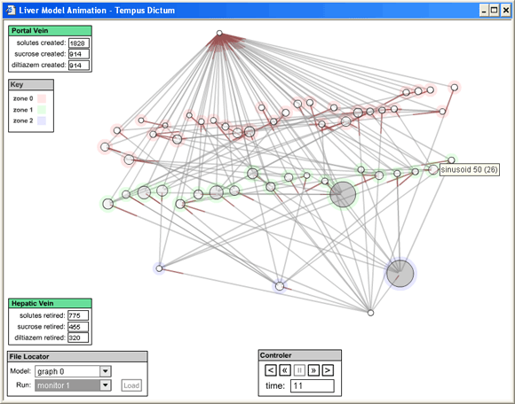

The liver model visualization (LMV) attaches to the output of the ISL software implementation; visualizing data flow as virtual particles are perfused through virtual liver tissue. The LMV is a visualization of the data generated from an in silico simulation of a hepatic acinus within a lobule. As an abstraction of an abstraction--twice removed from the biological wet lab experiments being emulated, the LMV will render the computational data in a way that ties it back to its biological referent.
The primary visualization will track with the data flow of the simulation along a time based index and visualize the network of sinusoidal canals that make up the hepatic acinus and the solution moving through those canals. Ancillary visualizations will track data from the simulation in various other ways, from simple data displays to performance graphs of functional components. Additionally, there will be charts that monitor each run segment of the simulation.
- what is visualization in generalThe purpose of a visualization is to represent, in a visual fashion, that which is hidden in some other context. Visual representations can lead to new understanding of what is being represented. Visualizations also allow connections to be made between elements being represented that might not be obvious otherwise. It facilitates cognition at a non-verbal level where visual symbols enable alternative interpretations.
- what is visualization versus animation vs. a GUI, etc. ... i.e. what's the pointThe primary purpose of the LMV is to represent the data output of the liver model simulation. While we are trying to relate the structural visualization to the idealized biological structure of a hepatic acinus, analysis of the data is the primary objective. Constraining the elements of the visualization to their biological derivatives adds meaning to the visualization and make comparisons to visualizations from other arenas easier and more useful. The visualization is not intended to be an animation of a solution profusing through liver tissue, any results to that effect are coincidental. In contrast, the purpose of the LMV is to clearly and succinctly represent the dynamics of the algorithms in the ISL. These dynamics must be clearly understood by the modeler in order for her to know and trust that the simulation is behaving as intended. The LMV is also not a Graphical User Interface. It is not inteded to be a control interface to the simulation itself--only a passive observer.
- why do it? what do we (bio-medical researchers) gain from it?In addition to the benefits bestowed by visualizations mentioned above, and specifically regarding the liver model simulation, the LMV will provide a real time analysis of the data while the simulation is running. It will assist the modeler and the domain expert in so-called "face validation", where the observer has an intuitive understanding of how a hepatic acinus behaves and the visualization either reflects that intuition, or it doesn't. In this same way, the LMV could also provide utility as a debugging devise or as a tool for spotting anomolies when parameter adjustments are being made. Rather than validation, however, this type of analysis targets verification and helps ensure that the computational system is behaving as intended.
II. The various pieces - SSes and their internals, the graph, the outputs/observablesThe LMV is made up of the structural visualization of the hepatic acinus and several ancillary visualizations and readouts of the component parts and larger context of the simulation.
The structural visualization is a graph of the nodes and edges that define the structure of the hepatic acinus. Different visual treatments could be applied to this graph to serve different purposses. The current veiw in the prototype is a network structure of the nodes and edges that illustrates the sinusoidal connection matrix. A proposed view in development will focus on illustrating the graph as a series of interconnecting canals where collections of these canals represent sinusoidal segments. With a pluggable interface the structural visualization could take on many different visualizations to suit different purposes.
In addition to multiple structural visualizations, we are proposing to develop exploded views of the graph structure. The current plan is to create a visualization of the individual Sinusoidal Segments (SSs). This view would likely utilize the pluggin archetechure mentioned above and be independant of the collective views. Even more granular views could also be developed using this approach.
A third type of visualization that would potentially displace or augment the structural visiualization are the "day in the life" visualizations. These would be diagrams or animated cartoons that illustrate the various anatomical units of the simulation. These visualization may or may not be tied to the data throughput of the simulation.
Lastly, ancillary visualizations would populate the perifery of the structural visualziation and provide additional (primarily statitistical) derived measures of the computational model. See The Next Step section of this document for a full list of these visualziations.
III. the current demo, what's in it, and what it showsThe prototype visualization was created using output files from the simulation -- the graph model representing the physical structure of the acinus ("lobule_*.gml") and the log file ("monitor.log"). The prototype renders the structural visualization as a network topology with the nodes/SSs represented as discs and the edges/sinusoidal connections represented as lines connecting the discs. There are two layout mechanisms in place for this topology: one that uses spatal data from the input stream (created by a third party graphing utility) and one that determines the topology using an internal algorithm. The prototype also included readouts for the portal vein and hepatic vein to track solutes passing through the system. As the LMV parses the simulation data, the discs representing sinusoids expand and darken as they fill with solutes and then reduce and lighten as solutes pass out of them.
 IV. The proposalThe top priorities moving forward are connecting the LMV to the ISL simulation. The first step will be to formalize a data model that the LMV and ISL can use to comminicate. Once a channel of communication is opened between the simulation and the visualization, the LMV will have two operational modes, one as a slave to the ISL simulation and one as a standalone browser of saved ISL output. After connecting the LMV to the ISL, work can begin on additional visualiations, data readous and user controls. The top visualization priority is a new structural view that represents the SSes as a network of tubular connections with solute concentrations and types clearly represented. The following is a full list of development proposals for the LMV: